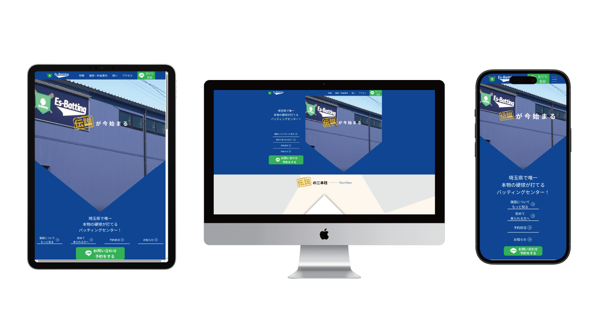

【デジタルハリウッド卒業制作】
Es-Batting 様
リニューアルサイト

OVERVIEW
埼玉県にあるバッティングセンター、Es-Batting様のリニューアルサイトです。
新規顧客の獲得に繋げるため、「中学生でも硬式球（革ボール）が打てる国内でもレアなバッティングセンター」としてクライアント様が持つ希少性(硬球・バットスイング解析システム)をアピールしました。
- 担当範囲：ディレクション・デザイン・コーディング・CMS(WordPress)実装
- 使用ツール：HTML・CSS・JavaScript・jQuery・PHP・WordPress・illustrator・Photoshop・Figma
- 制作期間：2ヶ月
企画書を見る
PROCESS
目的・ターゲット
目的
新規来場者の獲得 ・施設の認知拡大
ターゲット
施設所在地から半径60km圏内に在住の方（うち地元の小中学生70%・野球経験者30%）
⇒ヒアリングを重ねた結果、地元で野球をしている小中学生や現役で硬式野球をプレーしている方に来ていただきたいとのことでしたので、上記のように設定しました。
クライアント様からの要望
- 硬式が打てることをアピールしてほしい（硬式よりも軟式のほうが稼働が多い）
- 小中学生がかっこいいと感じるフォントを使用してほしい
- 予約状況が分かるようにしたい
- 各SNSと連携したい
課題
Es-Batting様としてのアピール不足
私が実際に利用した経験を踏まえ、ユーザーが実際に利用する行動を考慮して以下のポイントを課題としました。
情報面
- 新規ユーザーにとって知りたいEs-Batting様ならではの情報量が少ない/魅力が伝わりづらい
- LINE登録までの導線が分かりにくい
デザイン面
- 競合先とのデザインの差別化ポイントがなく、ユーザーにインパクトを与えづらい
- LINE登録までの導線が分かりにくい
解決策
Es-Batting様の希少性を紹介し、新規来場者の獲得に繋げる
今回の目的と課題、そしてターゲット・ペルソナ像から、他社サイトを収集・分析した上で、解決案を提案いたしました。
情報面
- 国内でもレアな革ボールを使用したパッティングセンターを全面的にアピールしました。
- 新規、常連ユーザーに合わせて導線を明確にしました。
- 予約状況、よくある質問を新設し、ユーザーの疑問解決に繋げました。
- SNS連携、SEO対策を行い認知度向上を図りました。
デザイン面
- ゴシック/筆記体フォント、青/金系統の色を用いて輝かしい未来感が期待できるデザインにしました。
- 各ページヘッダー及びにフッター直前にLINEボタンを設置し、コンバージョン率の向上を図りました。
配色
フォント
- Noto Sans JP
- Lobster
POINTS
クライアント様に合わせたCMS設計
本作品では、TOPページの「予約状況」と「お知らせ」の更新頻度を考慮し、サイト全体をWordPress化。管理画面から直感的に編集できるようカスタマイズし、運用工数を大幅に削減しました。
予約状況：固定ページ編集画面に専用項目を設置し、各ブースのステータスをプルダウンで簡単に変更可能。
お知らせ：管理画面からトピック・アイキャッチ画像・記事を編集するだけで更新可能。
ページコンテンツに応じたUI設計
特徴ページ・施設案内ページでは情報量が多く、ユーザーにとって視認性や操作性に課題がありました。そこでUIコンポーネントを実装し、快適に閲覧できるよう改善しました。
特徴ページ：デバイスサイズに応じたサブナビゲーションを実装し、スクロール量に応じて表示を変化させ、直感的に操作できるようカスタマイズ。
施設案内ページ：施設の簡略図と施設ボタンを組み合わせ、クリックでモーダルウィンドウを表示。施設紹介や料金案内をわかりやすく提示。
既存サイトからのデザインブラッシュアップ
既存サイトを大幅にブラッシュアップし、配色・背景・メインビジュアルを再設計。未来感と力強さを感じられるデザインへと刷新しました。
配色：ロイヤルブルーを基調にゴールドをアクセントとして採用し、かっこよさと未来感を演出。
背景：2つのホームベースをハの字に配置し、常に立体的に回転するアニメーションを実装。
メインビジュアル：ホームベース状の枠内で5種類の画像を切り替え、施設利用からスター選手になるまでのストーリーを感じられるアニメーションを表現。